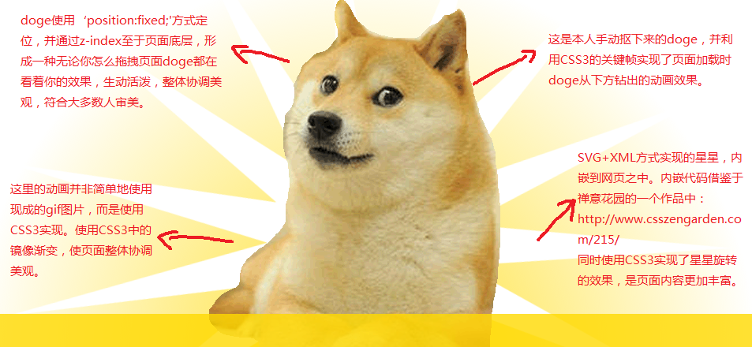
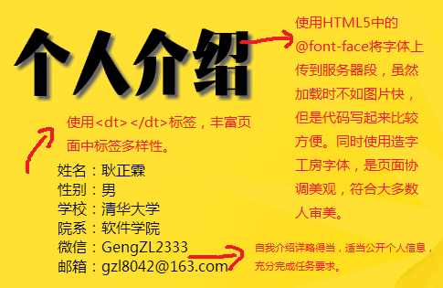
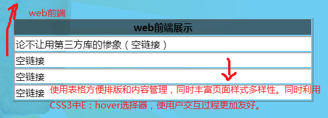
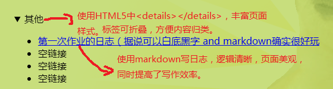
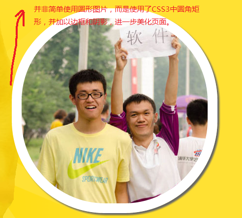

并非简单使用gif图片，同时利用CSS3许多有趣特性，加入doge元素，使页面协调美观，内容丰富，符合大多数人审美。 
自我介绍详略得当，个人照片和信息使用了恰当方式进行公开，充分实现了任务的要求。同时，页面中使用各种各样的标签，丰富页面的样式和内容。 
使用表格的方式方便内容的排版和管理，同时使用CSS3特性改善用户交互体验。充分实现任务要求。 
利用HTML5特性使得日志标签可以折叠，有利于日志的归类和整理。日志部分放在个人页面显著地方，并且在第一篇日志中，集中表达了我个人对本课程的期待、对Web 前端的理解、对老师和助教想说的话等内容，充分实现任务要求。 
为图片添加形状，边缘，阴影等诸多特性，使页面更加美观，内容更加丰富。 
为页面增加彩弹，充分从用户角度出发，提升网页魅力质量。